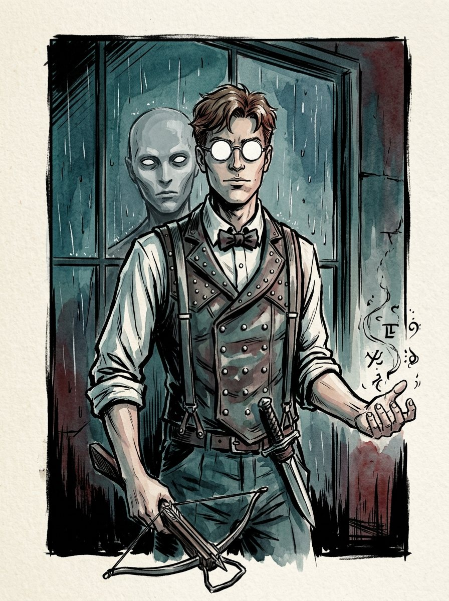

| Attack | Range | Hit / DC | Damage | Notes |
|---|---|---|---|---|
| Crossbow, HandRanged weapon | 30 (120) | +4 | 1d6+2 piercing | Vex Ammunition, Light, Loading |
| DaggerMelee weapon | 20 (60) | +4 | 1d4+2 piercing | Nick Finesse, Light, Thrown. Works with True Strike |
| Chromatic Orb1st level, Wizard | 90 ft. | +7 | 3d8 | V/S/M |
| Catapult1st level, Wizard | 60 ft. | DEX 15 | 3d8 bludgeoning | S |
| Unarmed StrikeMelee attack | 5 ft. | +2 | 1 bludgeoning | Or Grapple / Shove, DC 10 |
| Sneak AttackOnce per turn | – | – | +2d6 | Finesse or ranged weapon, with Advantage or an ally within 5 ft. of the target |
| Item | Wt. | Notes |
|---|---|---|
| Crossbow, Hand | 3 lb. | Equipped. Mastery: Vex |
| Dagger | 1 lb. | Equipped. Mastery: Nick |
| Studded Leather | 13 lb. | Equipped. Light armor, AC 12 + DEX |
| Thieves' Tools | 1 lb. | Utility, exploration |
One attack. With the dagger, Nick lets the Light property's extra attack happen inside the Attack action, once per turn, leaving the Bonus Action free.
Hit and damage a creature and you have Advantage on your next attack roll against it before the end of your next turn.
Change appearance and voice. Revert with an action.
Dash, Disengage, Dodge, Grapple, Help, Hide, Improvise, Influence, Magic, Ready, Search, Shove, Study, Utilize.
Dash, Disengage, or Hide.
Advantage on your next attack roll this turn if you have not moved. Your Speed is 0 until the end of the turn.
Insight (+5) against the target's Deception. On a success, Sneak Attack that target without Advantage for 1 minute, unless you have Disadvantage.
Perception to spot something hidden, or Investigation to uncover or decipher clues.
1st level, 60 ft.
Once per turn, +2d6.
| Spell | Level | Time | Range | Hit / DC | Effect | Notes |
|---|---|---|---|---|---|---|
| Blade Ward | Cantrip | 1 action | Self | – | Combat | Concentration, 1 min. V/S |
| Prestidigitation | Cantrip | 1 action | 10 ft. | – | Utility | 1 hour. V/S |
| True Strike | Cantrip | 1 action | Self | – | Weapon attack | S/M |
| Catapult | 1st | 1 action | 60 ft. | DEX 15 | 3d8 bludgeoning | S |
| Chromatic Orb | 1st | 1 action | 90 ft. | +7 | 3d8 | V/S/M |
| Feather Fall | 1st | 1 reaction | 60 ft. | – | Utility | 1 min. V/M |
| Find Familiar Ritual | 1st | 1 hour | 10 ft. | – | Summoning | V/S/M |
| Tenser's Floating Disk Ritual | 1st | 1 action, +10 min. as ritual | 30 ft. | – | Movement | 1 hour. V/S/M. Cast as a ritual |
Expertise in two skill proficiencies.
Once per turn you can deal an extra 2d6 damage to one creature you hit with an attack if you have Advantage on the roll and the attack uses a Finesse or Ranged weapon. The extra damage's type is the same as the weapon's type.
You don't need Advantage if at least one of your allies is within 5 ft. of the target, the ally doesn't have the Incapacitated condition, and you don't have Disadvantage on the attack roll.
You know Thieves' Cant and one other language of your choice.
Hand Crossbow (Vex). If you hit a creature with a Hand Crossbow and deal damage to it, you have Advantage on your next attack roll against that creature before the end of your next turn.
Dagger (Nick). When you make the extra attack of the Light property, you can make it as part of the Attack action instead of as a Bonus Action. This extra attack can only be made once per turn.
On your turn, you can take one of the following actions as a Bonus Action: Dash, Disengage, or Hide.
As a Bonus Action, you give yourself Advantage on your next attack roll on the current turn, provided that you haven't moved during this turn. After you use it, your Speed is 0 until the end of the current turn.
Whenever you make an Insight check to determine whether a creature is lying, treat a roll of 7 or lower on the d20 as an 8.
You can use a bonus action to make a Perception check to spot a hidden creature or object or to make an Investigation check to uncover or decipher clues.
As a bonus action, you can make an Insight check against a creature you can see that isn't incapacitated, contested by the target's Deception check. If you succeed, you can use your Sneak Attack against that target even if you don't have advantage on the attack roll, but not if you have disadvantage on it, for 1 minute or until you use this feature against a different target.
When you finish a Short Rest, you can recover expended spell slots. The spell slots can have a combined level equal to no more than 1, and none of the slots can be level 6 or higher. Once per Long Rest.
You're a Fey.
Medium. Speed 30 ft.
Proficiency in two of Deception, Insight, Intimidation, Performance, or Persuasion.
As an action, you can shape-shift to change your appearance and your voice. You determine the specifics of the changes, including your coloration, hair length, and sex. You can also adjust your height and weight and can change your size between Medium and Small. You can make yourself appear as a member of another playable species, though none of your game statistics change.
You can't duplicate the appearance of an individual you've never seen, and you must adopt a form that has the same basic arrangement of limbs that you have. This trait doesn't change your clothing and equipment. You stay in the new form until you take an action to revert to your true form.
Common plus two standard languages.
Initiative Proficiency. When you roll Initiative, add +2 to the roll.
Initiative Swap. Immediately after you roll Initiative, you can swap your Initiative with the Initiative of one willing ally in the same combat. You can't make this swap if you or the ally has the Incapacitated condition.